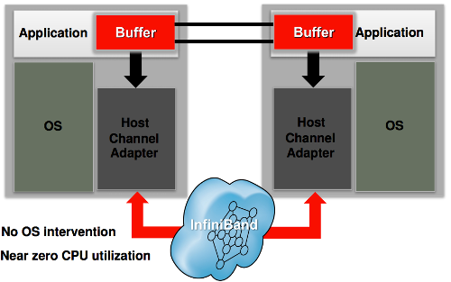
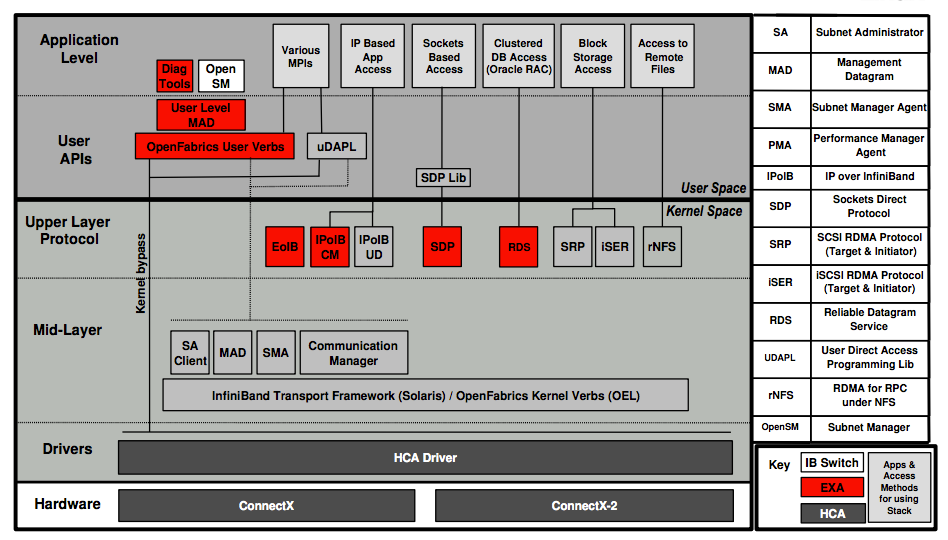
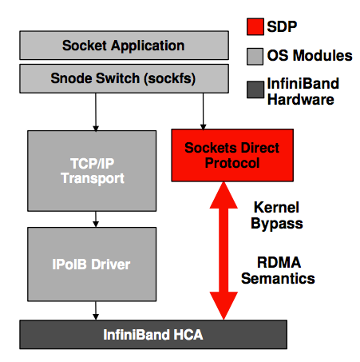
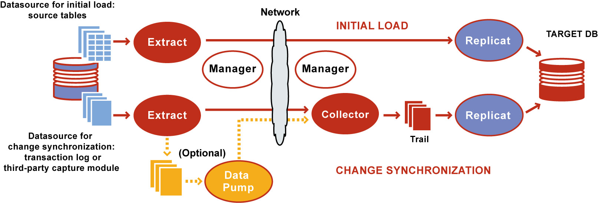

Oracle Enterprise Linuxes with preinstalled Grid Infrastructure (Clusterware + ASM)
Smallest variant of Exadata (Eighth Rack) we will have 2 db nodes.
intelligent storage layer
minimum 3 storage nodes
cell servers with preinstalled Oracle Enterprise Linux
CellSRV, MS, RS processes to provide efficient method to cope with db servers requests
InfiniBand technology, which is utilized for Clusterware interconnect traffic, RAC Cache Fusion traffic and for inter-layer transfers
Support for RDMA (Remote Direct Memory Access) is a direct memory access from the memory of one computer into another computer without involving either’s operating system.
iDB (Intelligent Database protocol) to transfer data between Database Node and Storage Cell Node.
It is implemented in the database kernel and work as function shipping architecture.
Exadta System Software User's Guide
Function Shipping
The process of moving logical services to the physical areas of a system where they can be optimally run.
Computational logic should be able to easily be shifted onto a client machine
as the necessity demands, whether it be a run-time based function for load balancing or
a natural part of the system evolution.
Functional areas are realigned to minimize the communication traffic generated across subsystems.
iDB is built on Reliable Datagram Sockets (RDS v3) protocol and runs over InfiniBand ZDP (Zero-loss Zero-copy Datagram Protocol).
iDB

iDB is built on Reliable Datagram Sockets (RDS v3) protocol and runs over InfiniBand ZDP (Zero-loss Zero-copy Datagram Protocol).
The objective of ZDP is to eliminate unnessary copying of blocks.
RDS is based on Socket API with low overhead, low latency, high bandwidth.
Exadata Cell Node can send/receive large transfer using Remote Direct Memory Access (RDMA).
RDS - Reliable Datagram Sockers (v3)

RDS can deliver high available and low overhead of datagrams, which is like UDP but more reliable and zero copy.
It accesses to InfiniBand via the Socket API. RDS v3 supports both RDMA read and write and can allow large data transfer up to 8MB.
Supports the control messages for asynchronous operation for submit and completion notifications.
RDMA - Remote Direct Memory Access

Direct memory access from the memory of one computer into another computer without involving either’s operating system.
The transfer require no work to be done by CPUs, caches, or context switches, and transfers continue in parallel with other system operations. It is quite useful in massively parallel processing environment.
Sockets Direct Protocol (SDP)
Deals with stream sockets
Provides an RDMA-accelerated alternative to the TCP protocol on IP, at the same time transparent to the application.
Allows high-performance zero-copy data transfers via RDMA network fabrics and uses a standard wire protocol over an RDMA fabric to support stream sockets (SOCK_STREAM).
Bypasses the OS resident TCP stack for stream connections between any endpoints on the RDMA fabric.
Depends on IP drivers for local IP assignments and for IP address resolution for endpoint identifications.
GoldenGate

Extract - Extract extracts (captures) a current, static set of data directly from their source objects
and keeps source data synchronized with another set of data.
Data pump - can perform data filtering, mapping, and conversion, or it can be configured in pass-through mode, where data is passively transferred as-is, without manipulation.
Replicat - Replicat can apply a static data copy to target objects or route it to a high-speed bulk-load utility.
Trails or extract files - To support the continuous extraction and replication of database changes, Oracle GoldenGate stores records of the captured changes temporarily on disk in a series of files called a trail.
Checkpoints - store the current read and write positions of a process to disk for recovery purposes.
Manager - control process of Oracle GoldenGate.
Collector - runs in the background on the target system when continuous, online change synchronization is active.
GoldenGate Administering Oracle GoldenGate for Windows and UNIX